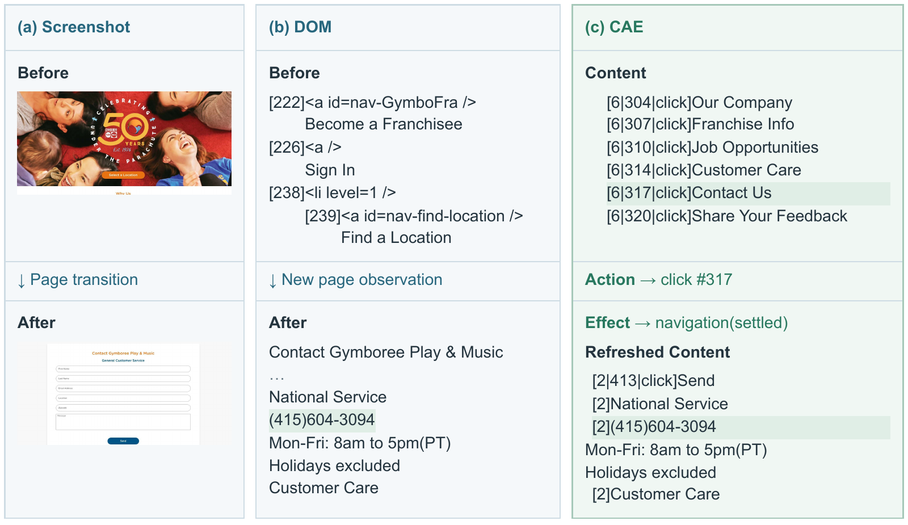

Content
Read a structured text view grounded in browser layout and paint information, with stable target identifiers.
Connect what the browser renders, what an agent can do,
and what changes after each action.
CAE organizes rendered content around identified targets and supported operations. The agent maintains a versioned page view, using incremental updates and observed effects to decide its next step.
Read a structured text view grounded in browser layout and paint information, with stable target identifiers.
Select an operation advertised by a target, then execute it through the browser environment.
Observe action outcomes and page changes, then update the decision context for the next turn.

197 real-website tasks, each with a completion specification. Evidence collection runs through its own CDP connection before the browser session closes; scoring uses deterministic functions.
Stored as Dataset/VerifiedTestSet. Evaluation errors and infrastructure failures retain null rewards; reports show both judged and overall denominators.
Use Python 3.11+, a model endpoint with tool calling, and Lexmount credentials for an ACE-enabled browser.
git clone https://github.com/chenruishi-lexmount/CAE-Agent.git
cd CAE-Agent
ACEAGENT_PYTHON=python3.11 bash Runner/install_python_env.sh
cp .env.example .env
# Fill in your model and Lexmount browser credentials in .env.
bash Runner/run_cae.sh \
--url https://example.com \
--task "Read the page and report its title." \
--model YOUR_MODELThe browser must support the CAE content API (Page.getAIPageContent). Code access requires repository permission. Setup details and evaluation instructions are in the repository README.